Turneul în imagini
Anotimpuri
Galerie foto
Momente surprinse pe scenele turneului — de la biserici fortificate și săli de patrimoniu, la concertele în aer liber ale verii.

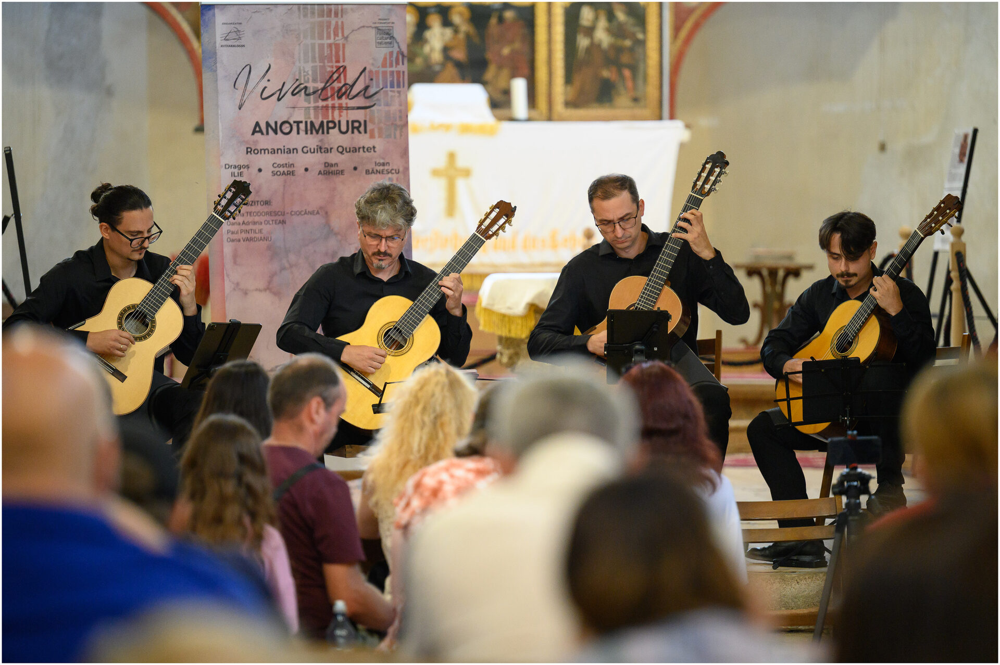
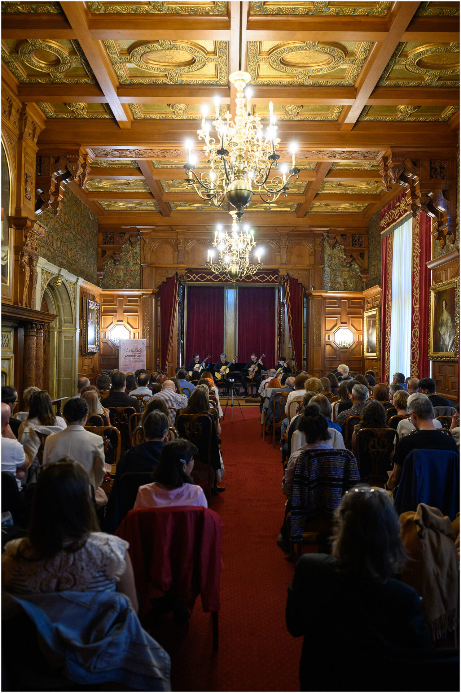
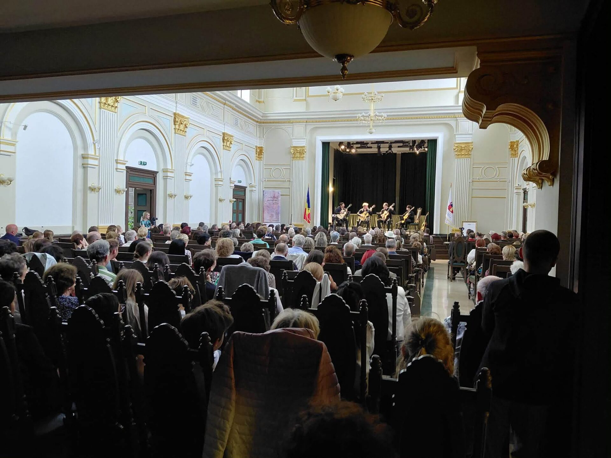
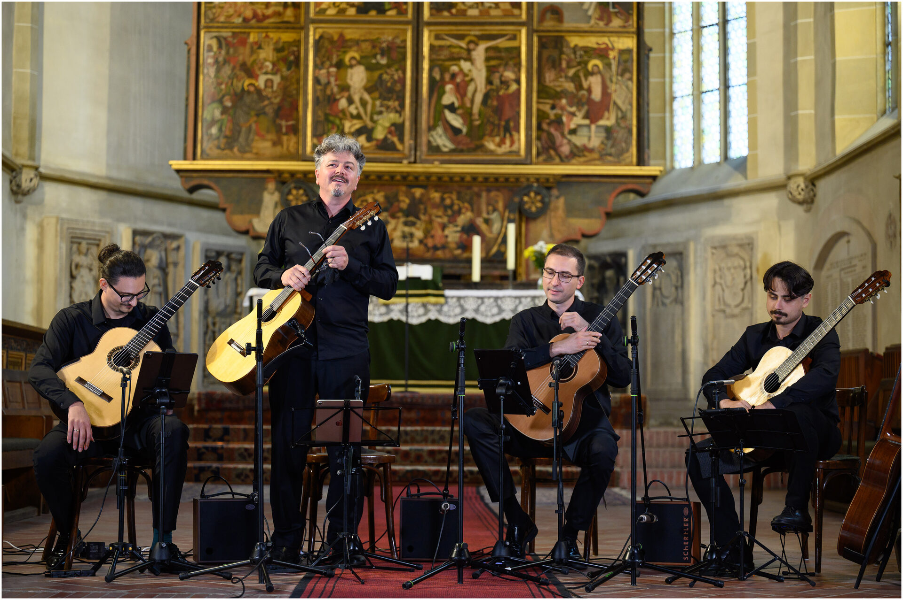
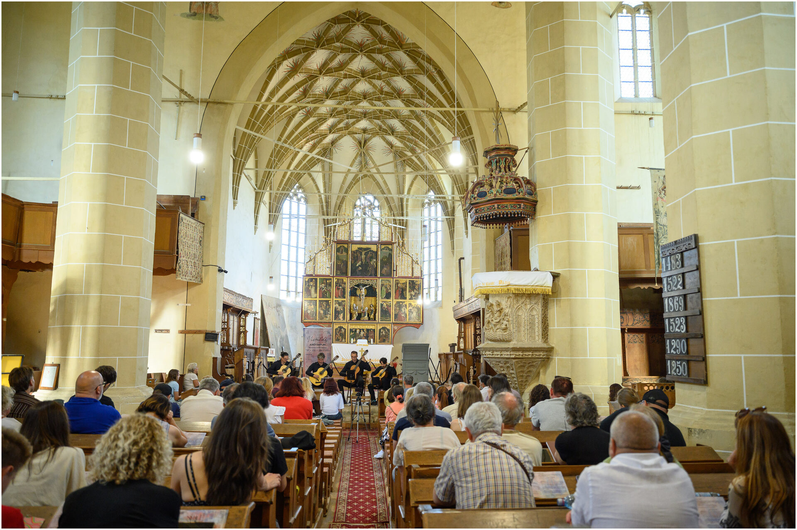
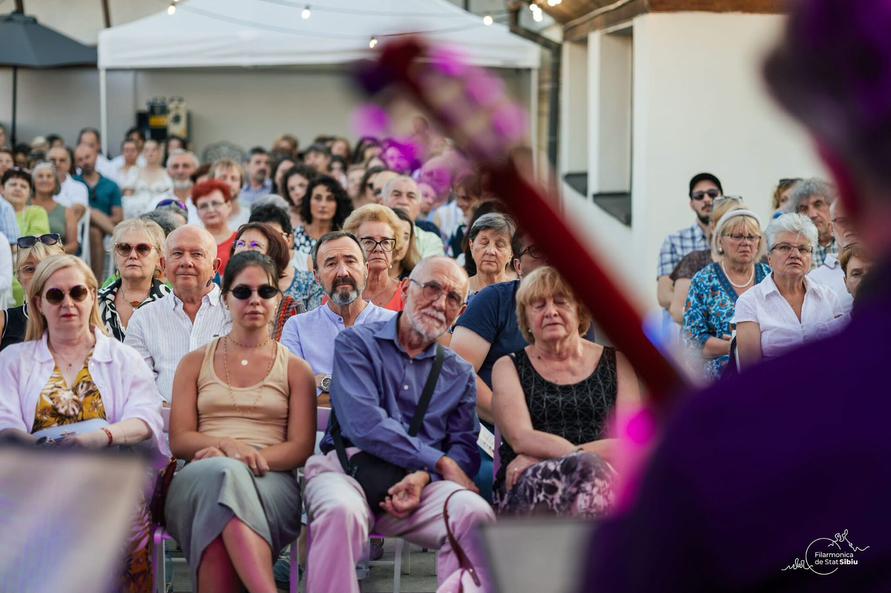
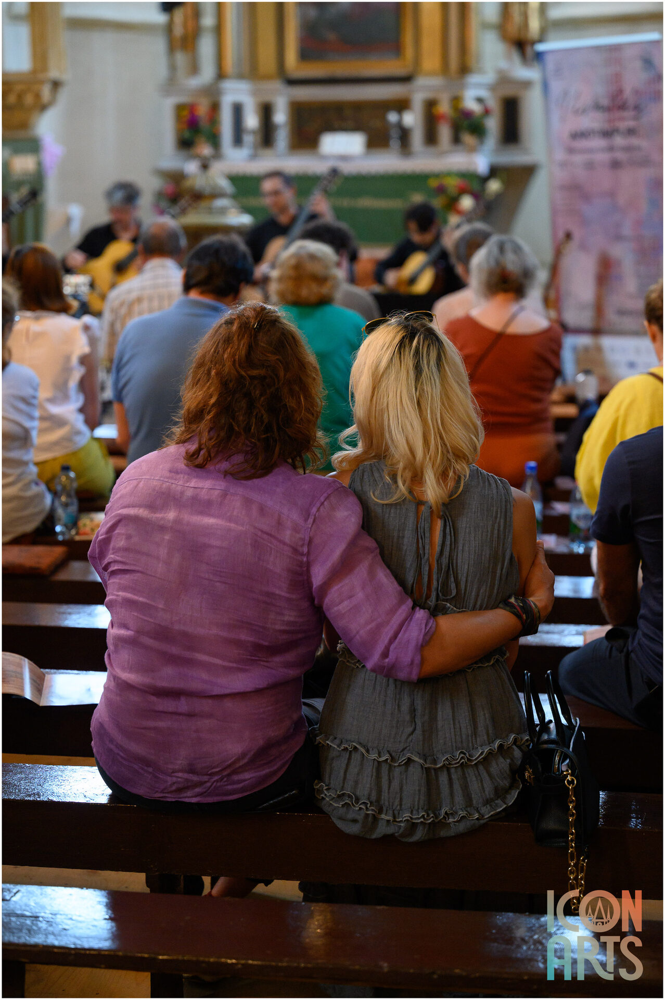
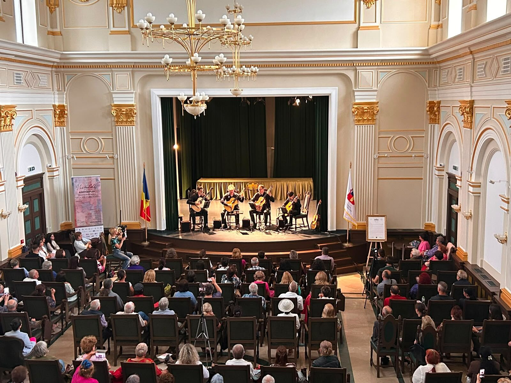
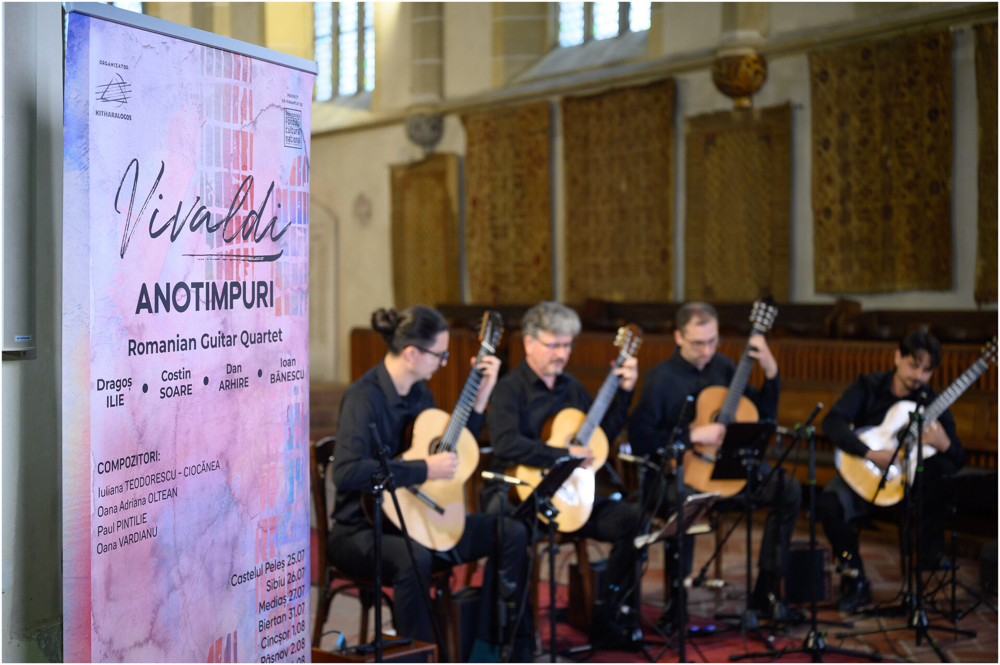
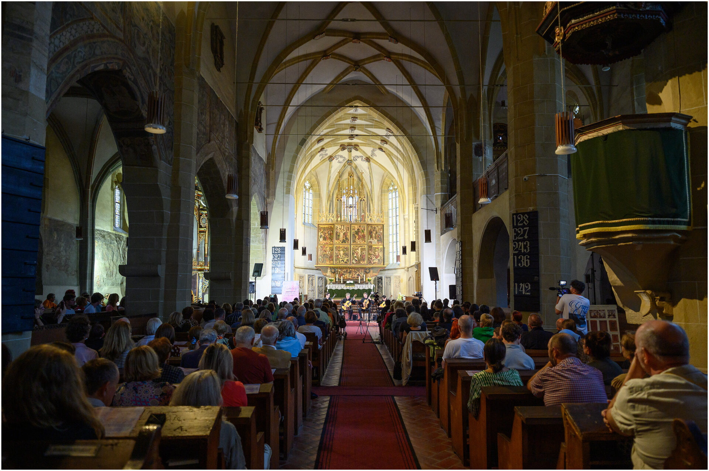
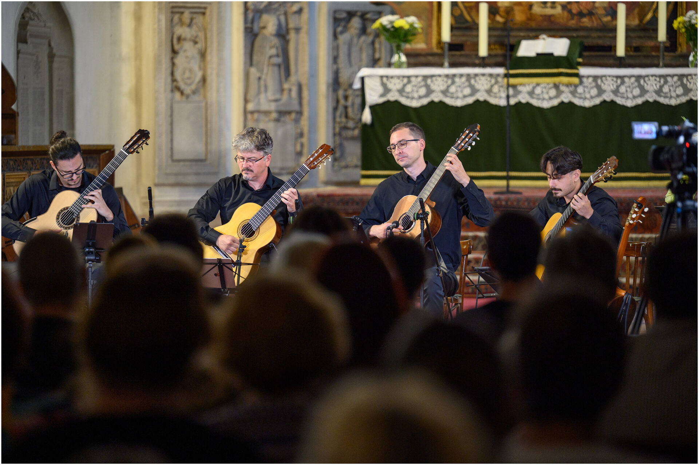
1 / 12
♪
Vino la concert
Consultă calendarul complet al turneului și alege concertul cel mai aproape de tine.
Vezi Programul